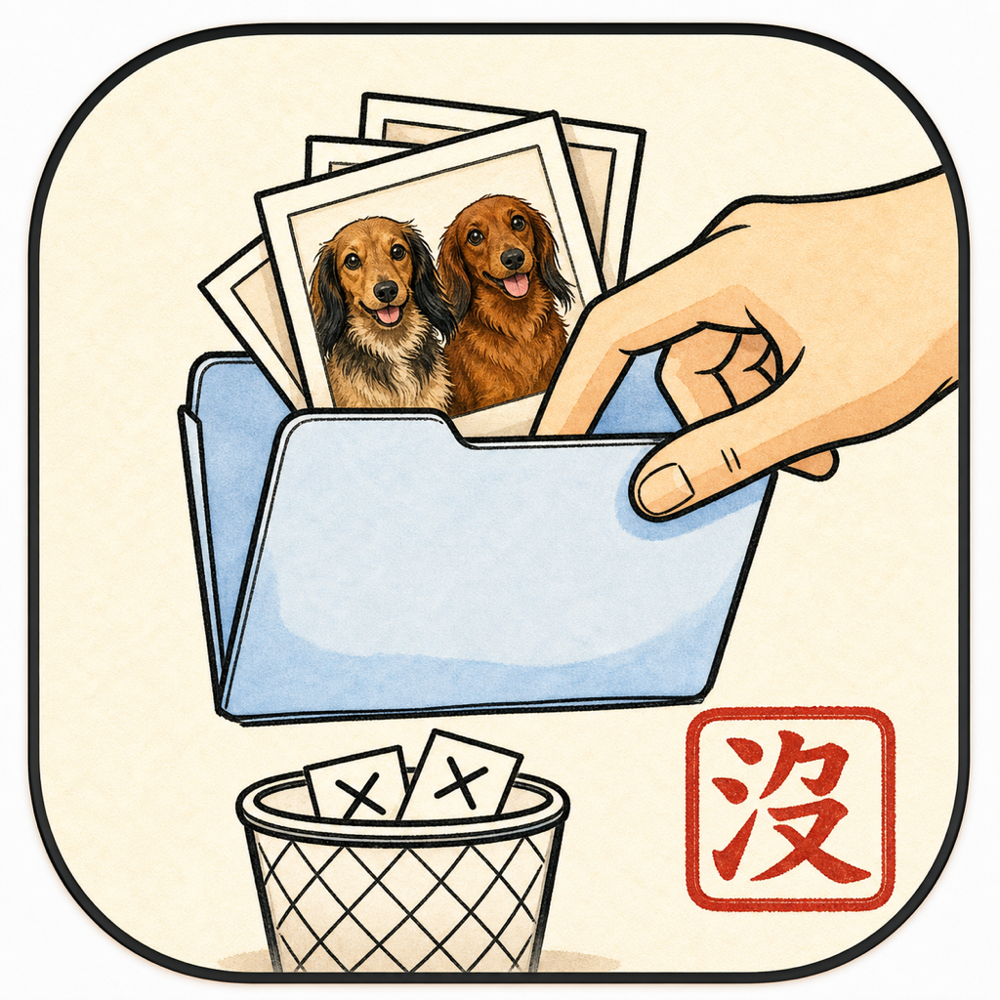
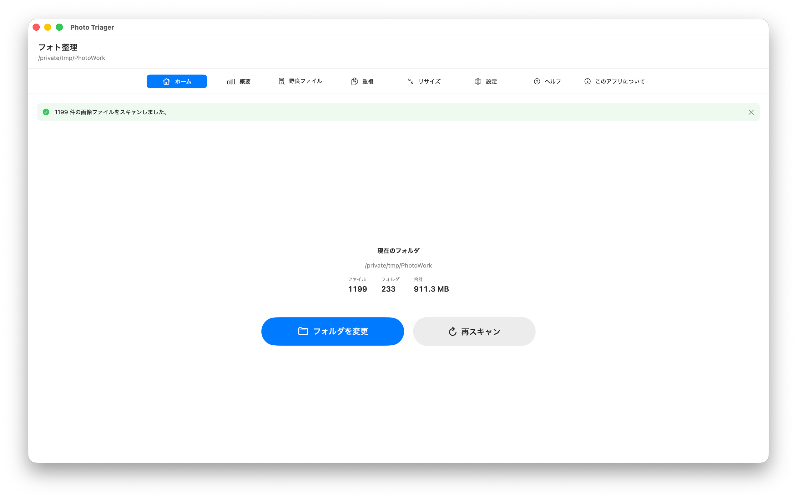
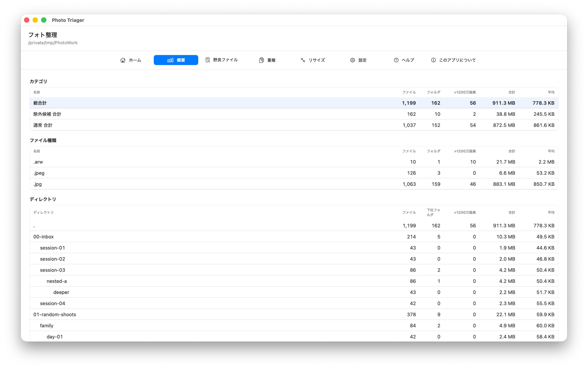
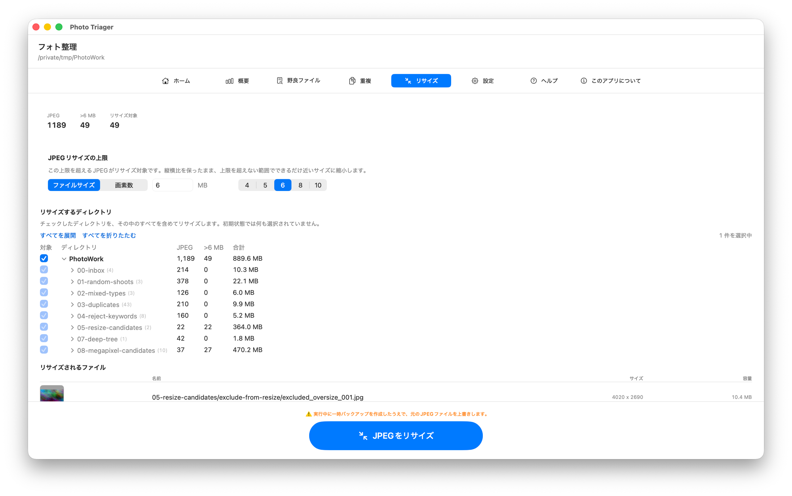

フォト整理
編集、納品、アーカイブ前に写真フォルダを確認して整理します。
macOS 14以降が必要です。
フォト整理は、整理前の写真フォルダを確認するためのMacアプリです。下位フォルダを含めてスキャンし、画像種類の集計、除外候補フォルダの分離、完全一致の重複検出、隠しファイルの退避、大きなJPG/JPEGのリサイズを、進捗と結果を見ながら実行できます。
写真編集アプリ、長期カタログ、Lightroomの代替ではありません。フォルダの中身を理解してから安全に整理するための、実用的な事前確認ツールです。
ダウンロード

サポート
ご質問、バグ報告、使い方の相談がある場合はご連絡ください。すべてのメッセージを読んでいます。
お問い合わせ前に
- Finderと件数が違う場合: 設定を確認してください。フォト整理は、設定で選ばれた画像拡張子だけを集計します。
- 除外候補フォルダが拾われない場合: 「除外候補フォルダのキーワード」に該当する語を追加し、再スキャンしてください。
- ファイルを移動できない場合: macOSの権限が必要な可能性があります。案内に従って退避フォルダの許可を行ってください。
- JPEGをリサイズする前に: 必ずバックアップを作成し、除外ディレクトリを確認してください。JPEGリサイズは元ファイルを上書きします。
マニュアル



ホーム
写真フォルダを選択し、別のフォルダへ変更し、外部でファイルが変わった後に再スキャンできます。下位フォルダも含めて再帰的にスキャンします。
概要
変更作業の前にフォルダ全体を確認します。画像数、ファイル種類、ディレクトリ数、除外候補合計、通常合計、総合計、大きいJPEG候補を確認できます。
野良ファイル
ドットで始まる隠しファイルを探し、選択した項目を退避フォルダへ移動します。直接削除せず、後で確認できる場所へ移動します。
重複
完全一致の重複ファイルを探します。各グループで残すファイルを選び、必要に応じてプレビューし、残りを退避フォルダへ移動します。
リサイズ
設定したサイズを超えるJPG/JPEGをリサイズします。パス順で処理し、変更したくないディレクトリは除外できます。リサイズ後も大きすぎる場合は、より小さい割合で再試行します。
設定
- 言語: アプリ表示を英語と日本語で切り替えます。
- カウント対象: スキャン、集計、重複検索、概要に含める画像拡張子を選びます。
- 除外候補フォルダのキーワード: reject、rejected、ぼつ、ボツ、没などのフォルダを通常フォルダと分けて集計します。
- 退避フォルダ: 野良ファイルや重複整理されたファイルの移動先を選びます。
- JPEGリサイズ境界: どのサイズを超えたJPG/JPEGをリサイズ候補にするか設定します。
ファイル安全性の注意
フォト整理は、選択したフォルダ内でファイルの移動や、リサイズ時の元JPEGファイルの上書きなどのファイル操作を行います。Hoshino Software は、ファイル、メタデータ、ディレクトリ構成、リサイズ結果、処理途中の状態が保持されること、復元可能であること、中断・エラー・損失・破損がないことを保証しません。必ず別のバックアップを用意し、変更してもよいコピーまたはファイルにのみ使用してください。
法的情報
プライバシーポリシー
最終更新: 2026年6月
収集しない情報
フォト整理は、個人データを収集、保存、使用、共有、販売、転送しません。アプリはMac上でローカルに動作するよう設計されています。解析、広告ネットワーク、トラッキングSDK、Hoshino Softwareのサーバーは使用しません。
ファイルとフォルダ
フォト整理は、ユーザーが選択したフォルダ、またはmacOSの許可を与えたフォルダにのみアクセスします。ファイルパス、画像内容、メタデータ、重複情報、リサイズ結果、設定は、ユーザーがサポートへメールで送信しない限りデバイス上に残ります。
サポートメール
サポートへ連絡する場合、問題の診断のため、メール本文にアプリバージョンや設定情報が含まれることがあります。そのメールを送信するかどうかはユーザーが選択します。
第三者サービス
フォト整理は、第三者の解析、広告、トラッキングサービスと連携しません。
ポリシーの変更
このプライバシーポリシーは更新されることがあります。変更はこのページに掲載された時点で有効になります。
お問い合わせ
このプライバシーポリシーに関するご質問は、support [at] hoshinosoftware [dot] com までご連絡ください。